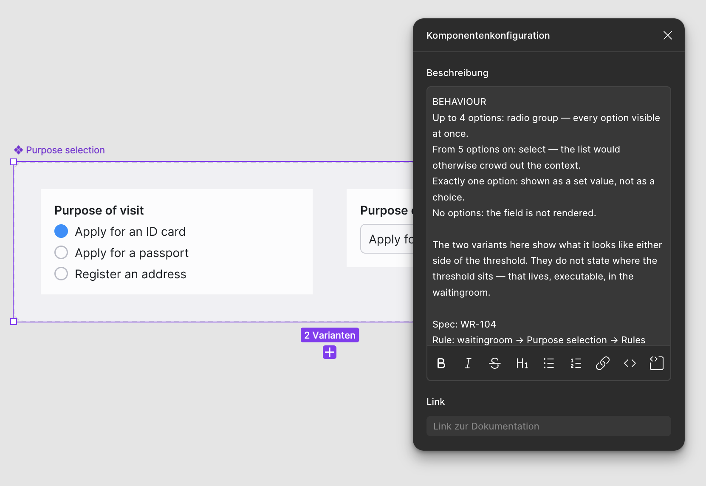
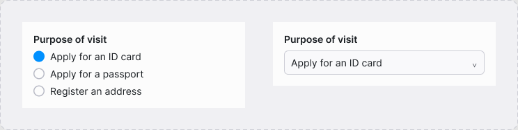

Where the rules sit in Figma
The behaviour is written in the component's own description — at the component, without leaving the tool. Readable through the API, which is what makes it a channel rather than a note.


Component description, read back from Figma
BEHAVIOUR Up to 4 options: radio group — every option visible at once. From 5 options on: select — the list would otherwise crowd out the context. Exactly one option: shown as a set value, not as a choice. No options: the field is not rendered. Spec: WR-104 Rule: waitingroom → Purpose selection → Rules
Same text, fetched through the API.
What it is not: a full specification. Where the threshold sits, what happens while options load, whether one is preselected — those get settled here, where they can be run. Figma states the intent; this page states every case.
Each component's three views come from one file in rules/. Change a
threshold there and prototype, rule text and code change together — there is no
second place to keep in sync. All data is synthetic: an invented citizen
registration office, no connection to any real case or person.